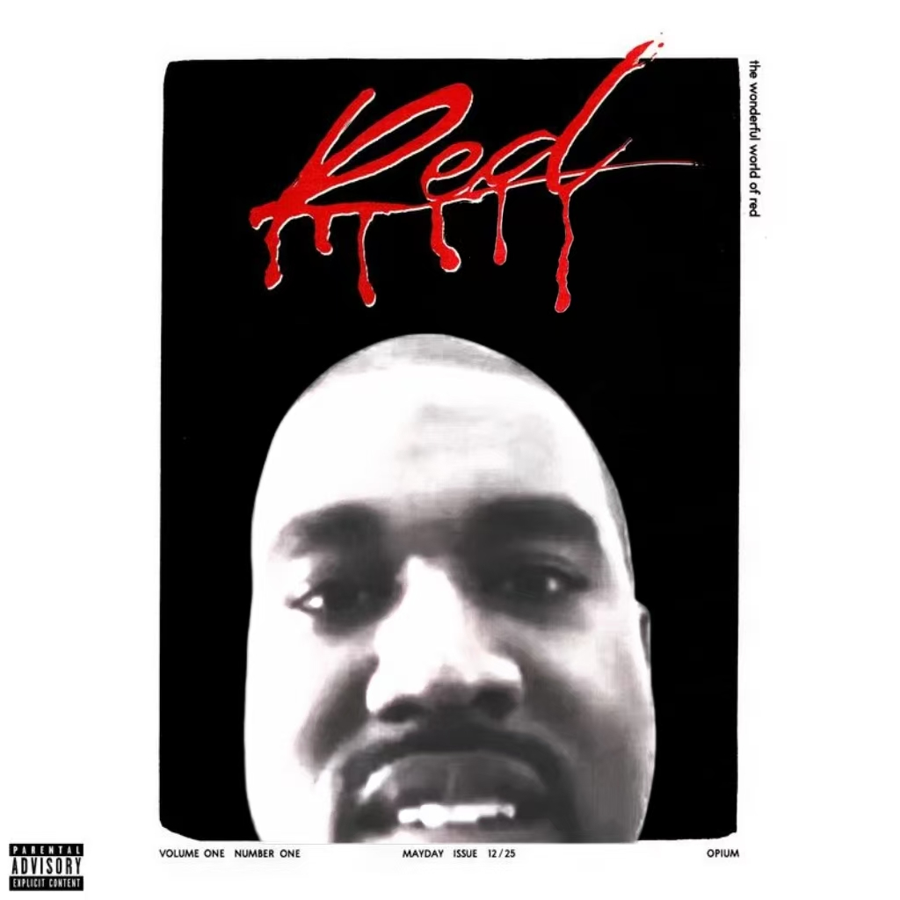
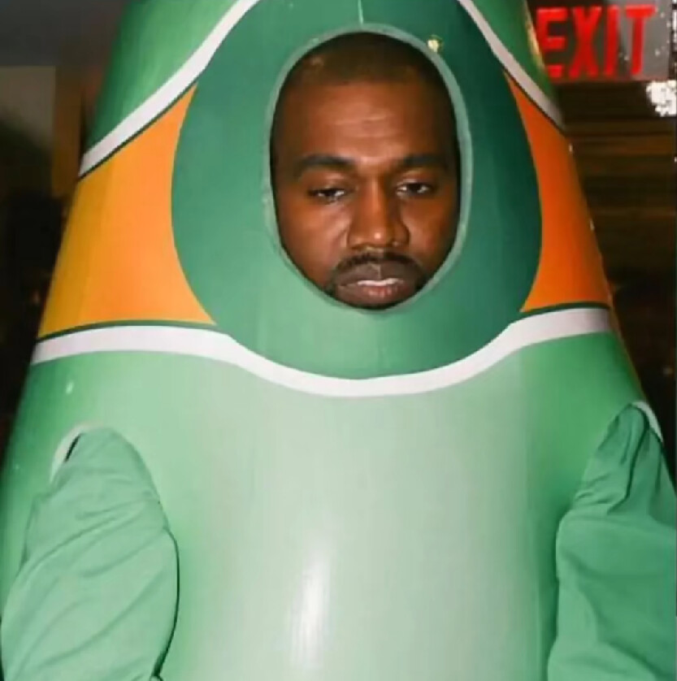

Kanye West


个人信息
中文名：坎耶·韦斯特
外文名：Kanye Omari West
别名：Ye、Yezzy、侃爷
出生日期：1977年6月8日
国籍：美国
出生地：美国乔治亚州亚特兰大
职业：说唱歌手、音乐制作人、商人、服装设计师
身高：173 cm
星座：双子座
代表作品：《Flashing lights》《Bound 2》《I Wonder》《Street Lights》《Runaway》
职业经历与成就
1. 音乐事业
出道与制作人生涯：
2000年以Roc-a-Fella唱片公司制作人身份出道，曾为Jay-Z、艾丽西亚·凯斯等巨星制作专辑，代表作包括Jay-Z的《The Blueprint》系列。
个人专辑与里程碑：
首张专辑The College Dropout》（2004年）：获格莱美最佳说唱专辑奖，奠定其“说唱诗人”地位
商业巅峰：专辑《Graduation》（2007年）首周销量95.7万张，单曲《Stronger》采样自Daft Punk，登顶公告牌单曲榜
实验性突破：《808s & Heartbreak》（2008年）融合电子与情感元素，影响新一代说唱风格
艺术高度：《My Beautiful Dark Twisted Fantasy》（2010年）被《滚石》评为满分专辑，获多项格莱美奖
近期作品：2020年发行福音专辑《Jesus Is King》，2021年凭此获格莱美最佳当代基督教音乐专辑奖
奖项与荣誉：
24座格莱美奖（截至2024年），包括最佳说唱歌手、最佳说唱专辑等，成为历史上获奖最多的嘻哈艺术家之一
7张B榜冠军专辑，12项黑人娱乐电视大奖，两度入选《时代周刊》全球百大影响力人物
2. 商业与跨界
品牌与时尚：
2009年与Adidas合作推出Air Yeezy运动鞋，创立服装品牌Yeezy，市值一度超10亿美元
2015年投资音乐流媒体平台Tidal，推动行业革新
政治活动：2020年宣布竞选美国总统，主张“创新与自由”，虽败选但引发广泛关注，计划参与2024年大选
个人生活与社会活动
家庭背景：父亲为前黑豹党成员兼摄影师，母亲Donda West（求复活）为芝加哥州立大学教授，对其教育理念影响深远。3岁随母迁居芝加哥，13岁创作首支单曲《Green Eggs and Ham》
教育经历：曾就读南京某小学（1987年随母访学），后毕业于波拉瑞斯高中，大学辍学专注音乐事业
慈善事业：
2003年创立“坎耶·韦斯特基金会”，资助非裔与拉丁裔儿童教育，累计捐款超50万美元
参与卡崔娜飓风赈灾、伊拉克退役军人援助等公益活动
争议与法律事件
音乐风格争议：专辑《808s & Heartbreak》因使用Auto-Tune遭同行批评，被50 Cent指责“背离嘻哈本质（你就让让他吧确实好听）
公众事件：近期反鱿乃至支持辣脆言论愈演愈烈，让人不经担心他的精神状态究竟恶化到了何等程度
代表专辑列表
1.《The College Dropout》（2004）
2.《Late Registration》（2005）
3.《Graduation》（2007）
4.《808s & Heartbreak》（2008）
5.《My Beautiful Dark Twisted Fantasy》（2010）
6.《Yeezus》（2013）
7.《The Life of Pablo》（2016）
8.《Ye》（2018）